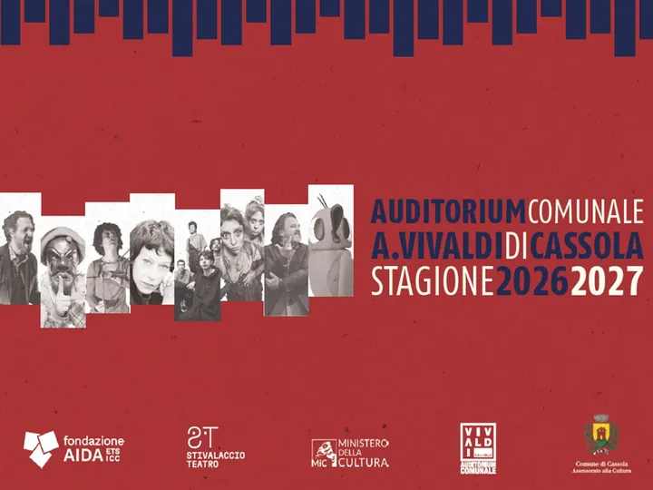

da ven 6 nov a sab 17 apr
Stagione 2026/2027 Auditorium Vivaldi
Da novembre 2026 ad aprile 2027 undici appuntamenti firmati Fondazione Aida in collaborazione con il Comune di Cassola.
 Indicazioni
Indicazioni
- Costi e prenotazioni
- Costo non indicato · Prenotazione non indicata
- Programma
- Programma da verificare. Apri la fonte ufficiale per orari e possibili aggiornamenti.
- In caso di maltempo
- Nessuna indicazione specifica pubblicata.
- Note
- Acquisito automaticamente dalla fonte.
L’EVENTO
Descrizione completa
Da novembre 2026 ad aprile 2027 undici appuntamenti firmati Fondazione Aida in collaborazione con il Comune di Cassola.
La nuova stagione dell’ Auditorium Vivaldi di Cassola propone, da novembre 2026 ad aprile 2027, undici appuntamenti pensati per coinvolgere spettatori di tutte le età.
Il cartellone si apre il 6 novembre con Arlecchino muto per spavento di Stivalaccio Teatro e prosegue con nomi di rilievo come Fabio Troiano, protagonista de Il Dio bambino, Giuliana Musso con Mio Eroe e Natalino Balasso in Dizionario Balasso. Spazio anche alla danza con Callas e altre voci straordinarie e alla musica con i Fourback e Mario Rossi fa Rap.
Non mancano quattro spettacoli dedicati alle famiglie : La Regina delle Nevi, Cuore di Pane, Il ladro di sole e Il canto magico della foresta. Proposte che, attraverso fantasia, musica e narrazione, avvicinano anche i più piccoli al mondo del teatro.
La stagione è organizzata da Fondazione Aida in collaborazione con il Comune di Cassola.
IL PROGRAMMA
Programma e orari
Appuntamenti raccolti dalle fonti elencate. Dove manca un orario, non è ancora disponibile in questa scheda.
Programma pubblicato
- 2026-11-06 — 2026-11-06 ·
- 2026-11-20 — 2026-11-20 ·
- 2026-11-27 — 2026-11-27 ·
- 2026-12-13 — 2026-12-13 ·
- 2027-01-17 — 2027-01-17 ·
- 2027-02-06 — 2027-02-06 ·
- 2027-02-07 — 2027-02-07 ·
- 2027-02-16 — 2027-02-16 ·
- 2027-02-27 — 2027-02-27 ·
- 2027-03-10 — 2027-03-10 ·
- 2027-03-16 — 2027-03-16 ·
- 2027-03-18 — 2027-03-18 ·
- 2027-03-21 — 2027-03-21 ·
- 2027-04-03 — 2027-04-03 ·
- 2027-04-09 — 2027-04-09 ·
- 2027-04-17 — 2027-04-17 ·
INFORMAZIONI UTILI
Prima di partire
- Controllare la fonte prima di partire.
ORGANIZZAZIONE